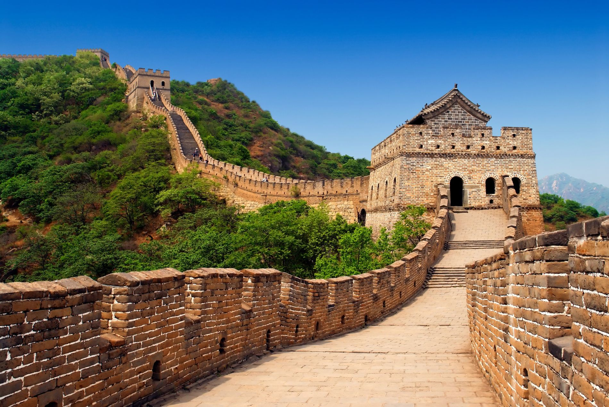

A Grande Muralha da China
A Grande Muralha da China é uma das construções mais icônicas e impressionantes da história humana. Estendendo-se por milhares de quilômetros através das montanhas e planícies do norte da China, foi construída ao longo de séculos por diversas dinastias para proteger o território chinês contra invasões de povos nômades do norte.
Informações Gerais
| Característica | Detalhes |
|---|---|
| Localização | Norte da China |
| Comprimento total | Aproximadamente 21.196 km |
| Construção inicial | Século VII a.C. |
| Principal período de construção | Dinastia Ming (1368–1644) |
| Material principal | Pedra, tijolo, terra compactada e madeira |
| Patrimônio Mundial UNESCO | Desde 1987 |
| Status | Maravilha do Mundo Moderno (desde 2007) |
Curiosidades
- A Muralha não é visível a olho nu do espaço, ao contrário do mito popular.
- Cerca de 400.000 trabalhadores morreram durante sua construção e foram enterrados dentro dela.
- A Muralha não é uma estrutura única e contínua, mas sim múltiplos segmentos construídos em épocas diferentes.
- Ela atravessa 15 províncias e regiões da China.
- O arroz glutinoso foi usado como argamassa para fortalecer os tijolos durante a Dinastia Ming.
- Recebe mais de 10 milhões de visitantes por ano.
Imagen
